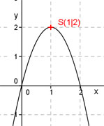

Aufgabe 52 Bestimmen Sie die Koordinaten des Extremwertes für y = -2x2 + 4x Der Extremwert einer Parabel ist der Scheitelpunkt. Ist die Parabel nach oben geöffnet, ist es der tiefste, ist sie nach unten geöffnet, der höchste Punkt. y = -2x² + 4x Die Parabel ist nach unten geöffnet, Zahl vor x² ist negativ. y = -2x2 + 4x |:(-2) y ---- = x² - 2x -2 Quadratische Ergänzung: y ---- = x2 - 2x + 1 – 1 -2 Mit x2 - 2x + 1 = (x – 1)2 y ---- = (x – 1)2 - 1 | *(-2) -2 Scheitelpunktform: y = -2(x – 1)2 + 2 Abgelesen: S(1|2) Der Extremwert, der höchste Punkt, hat die Koordinaten (1|2). 